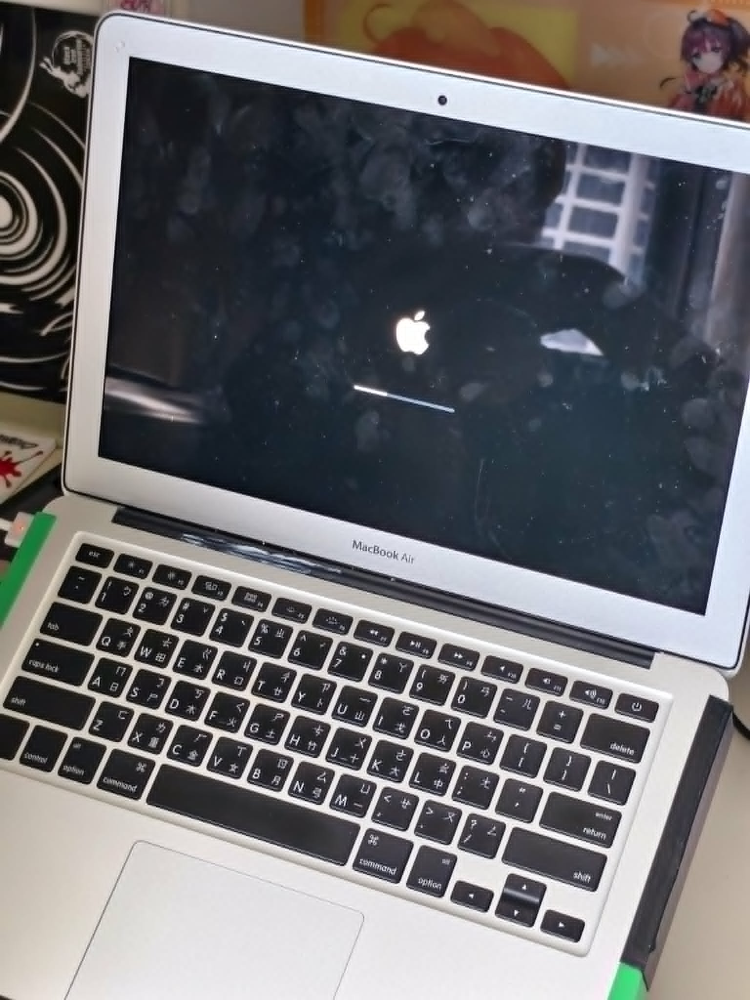
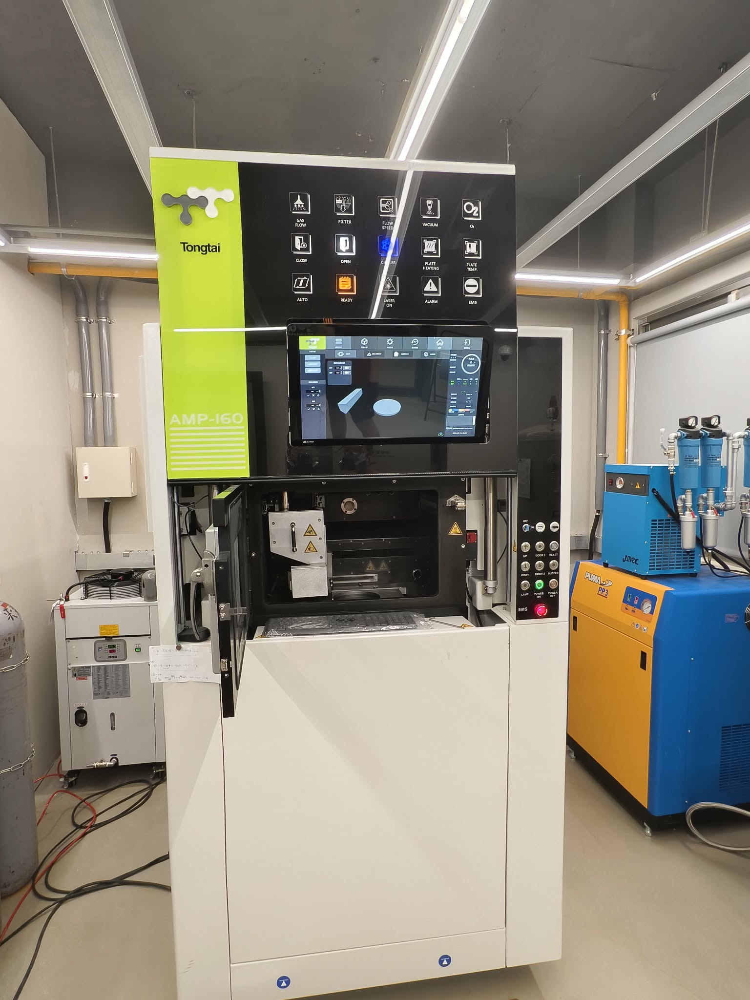
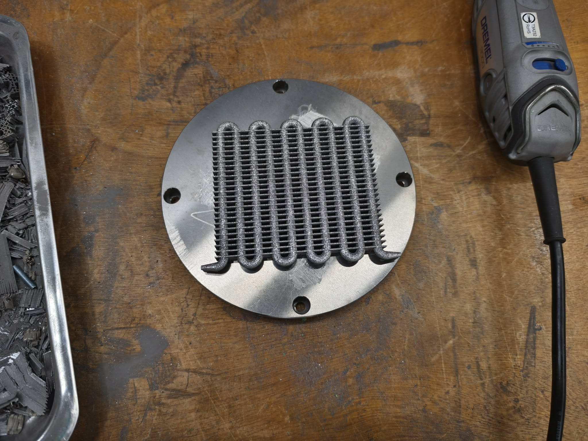
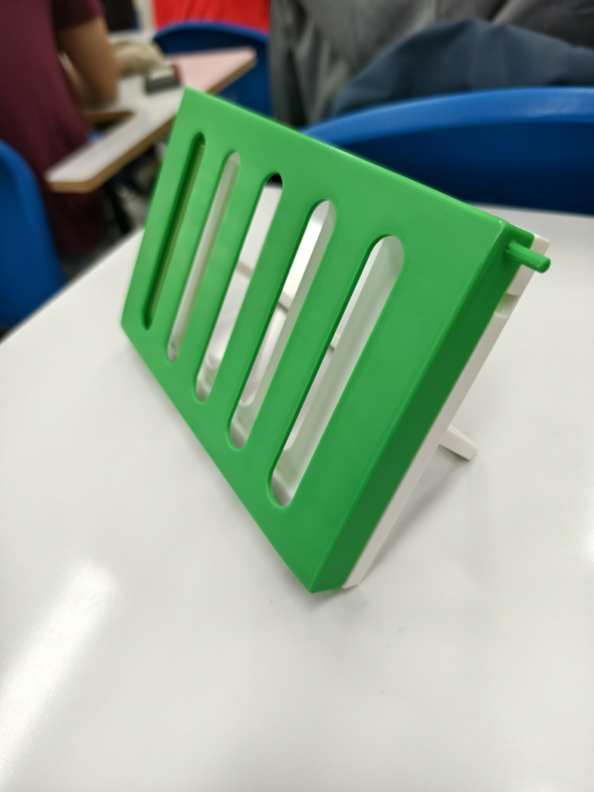

Yo Chill: Water-Cooled Laptop Engineering
Executive Summary
Yo Chill is an engineering project focused on converting a legacy 2017 MacBook Air into a portable, high-performance, water-cooled machine.
Older laptops often suffer from severe thermal throttling, high fan noise, and performance limitations. Commercial external liquid-cooling laptops can cost upwards of $7,000 USD and remain too bulky for daily transport, while DIY mods usually lack portability. This project bridges the gap by integrating a custom liquid-cooling loop into a lightweight 3D-printed chassis.

Figure 1: Modded 2017 MacBook Air booting up with custom cooling attachments.Core Objectives
1. Enhanced Cooling Capacity
Replace the stock heat sink with a higher-wattage liquid-cooling assembly.
2. Acoustic Optimization
Maintain noise levels at ≤ 20 dB during standard operations for silent running.
3. Integrated Form Factor
Fuse the cooling system directly into the chassis to retain true portability.
4. Technical Balance
Optimize materials, size, and power consumption across dual operating modes.
Market & Competitor Analysis
| Metric / Feature | Commercial (ASUS ROG GX800) | Typical DIY Mod | Yo Chill Target |
|---|---|---|---|
| Price Point | ~$7,000 USD | Low Cost | Budget DIY / Custom Fabrication |
| Portability | Heavy, bulky external dock | Loose wiring/tubing | Integrated backplate & stand |
| Aesthetics | Industrial Gaming | Exposed / Unpolished | Seamless 3D-printed housing |
| Noise Level | Audible under full load | Varies | ≤ 20 dB (Silent) / ≤ 35 dB (Peak) |
Technical Implementation & Digital Fabrication
Metal 3D Printing & Fabrication: Using industrial metal additive manufacturing (Tongtai AMP-160 selective laser melting equipment), we fabricated custom high-efficiency internal liquid tubing structures designed specifically for dense thermal transfer.

Figure 2: Tongtai AMP-160 Metal 3D Printing Station.
Figure 3: Completed metal-printed heat sink and internal liquid loop module.
Figure 4: Custom 3D-printed chassis backplate and integrated laptop stand.Dual Operating Modes:
- Silent Mode: Fans are disabled, relying entirely on passive dissipation and coolant circulation for zero-noise productivity.
- Performance Mode: Low-RPM fans engage alongside the liquid loop to sustain maximum clock speeds under intense workloads.
Validation & Experimental Testing
- Performance Benchmark: Ran Cinebench R23 loop stress tests to evaluate sustained multi-core performance without thermal throttling downclocks.
- Thermal Equilibrium: Measured system temperatures every 5 seconds to target a steady-state thermal equilibrium ≤ 60°C under full load.
- Acoustic Profiling: Recorded noise output with a calibrated decibel meter, achieving maximum load levels of ≤ 35 dB.